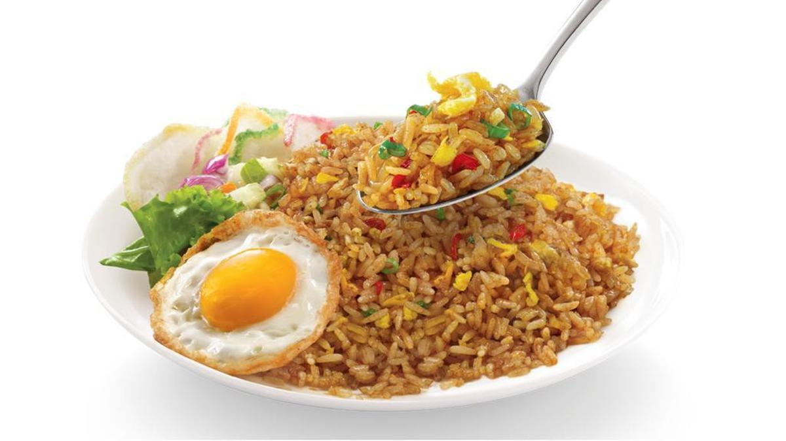

Nasi goreng adalah salah satu makanan yang paling terkenal di Indonesia. Hidangan ini merupakan kuliner ikonik yang sangat populer di kalangan masyarakat Indonesia maupun wisatawan mancanegara. Artikel ini akan membahas tentang resep nasi goreng dengan berbagai variasi. Ada karbohidrat, protein dan sayuran.
Kalau sedang diet atau ingin membuat nasi goreng yang lebih sehat, bisa juga kok. Ada beberapa resep nasi goreng sehat yang bisa kamu ikuti. Penasaran? Simak sampai tuntas, ya!